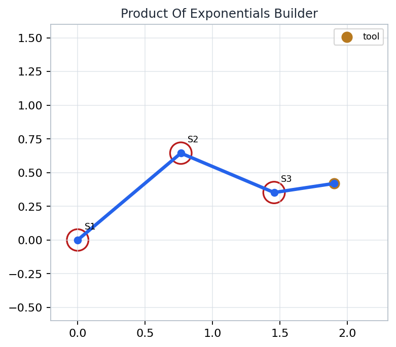
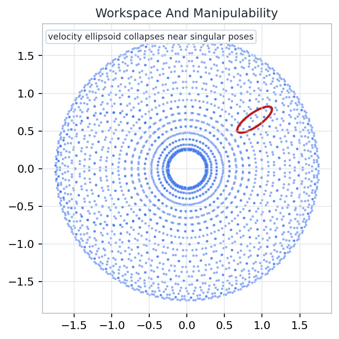
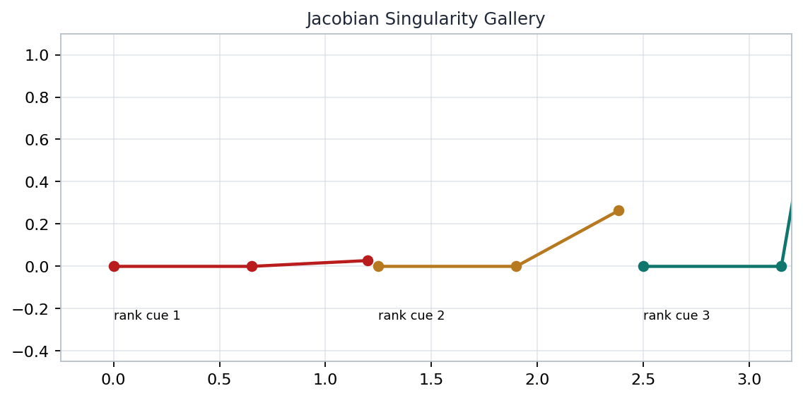

Chapter 03
Manipulator Kinematics: From Joint Screws To Rank Loss
How does a list of joint motions become a pose map, a velocity map, and a diagnostic for when the robot loses usable directions?
Artifact Forward kinematics as a product of exponentials, with each joint contributing one rigid motion.
Computation Differentiate that pose map to get spatial and body Jacobians for velocity, force, and local IK.
Invariant Rank, conditioning, and manipulability expose the poses where motion authority collapses.
Source grounding: Chapter 03, printed pp. 81-154; PDF pp. 99-172. Notebook: A-Mathematical-Introduction-to-Robotic-Manipulation/part-01-foundations-and-single-robot-manipulation/chapter-03-manipulator-kinematics/03-manipulator-kinematics.ipynb
Open the lecture by naming the organizing question rather than starting with notation. The chapter is about converting joint coordinates into task-space statements. Emphasize that the same objects will be reused three times: first for pose, then for velocity, then for rank and conditioning. The source span is shown so students know this is a guided synthesis of the assigned chapter and the companion notebook, not a replacement for the reading.
Kinematic Objects And Coordinate Promises Frame discipline
Objects
Configuration q : the joint coordinates.
End-effector pose g(q) \in SE(3) .
Twist \xi = (\omega, v) : instantaneous rigid motion.
Jacobian J(q) : columns are joint-generated twists.
space frame S
tool frame T
Visible source: Chapter 03 source span, printed pp. 81-154; PDF pp. 99-172.
Pause on the word promise. Every formula in manipulator kinematics silently promises which frame its coordinates use. A twist written in the space frame and a twist written in the body frame may describe the same physical motion, but their numeric components are not interchangeable. Tell students that many wrong answers in this chapter come from mixing true geometry with mismatched coordinates.
Product Of Exponentials Forward Kinematics Pose map
g(q)=e^{\hat{\xi}_1 q_1} e^{\hat{\xi}_2 q_2}\cdots e^{\hat{\xi}_n q_n} g(0)
The zero pose g(0) anchors the tool frame.
Each joint contributes one exponential motion.
Multiplication order is part of the model, not cosmetic notation.

Generated artifact: product-of-exponentials-builder.png
Source grounding: POE construction in Chapter 03, printed pp. 81-154; PDF pp. 99-172.
Use the generated builder figure as the visual memory for the formula. The key teaching move is to separate the physical idea from the notation: a robot is not being approximated by exponentials; a revolute or prismatic joint is exactly a one-parameter subgroup of rigid motions under the assumptions of the chapter. The product records how those subgroup motions are composed.
What One Exponential Contributes Local motion
Revolute e^{\hat{\xi}\theta}
Rotation about an axis, plus the translation induced by choosing an axis not through the origin.
Prismatic e^{\hat{\xi}d}
Pure translation along a fixed direction. The angular part is zero.
Composition AB \neq BA
The earlier factors move the coordinate system in which later effects are observed.
joint 1
joint 2
joint 3
g(q)
Source grounding: joint exponentials and rigid motions, Chapter 03, printed pp. 81-154.
Make this slide tactile: each factor is a command to move by one joint while respecting the frame convention. For a revolute joint, students often remember only the rotation matrix and forget the translational term created by an offset axis. For a prismatic joint, the angular part vanishes, which makes it a useful contrast case when deriving Jacobian columns later.
Twist Parameterization Six coordinates
\xi = \begin{bmatrix}\omega \\ v\end{bmatrix},\qquad \hat{\xi}=\begin{bmatrix}\hat{\omega}&v\\0&0\end{bmatrix}
A twist is the coordinate vector for an instantaneous rigid-body velocity.
Axis-Based Reading
For a revolute axis through point q : v=-\omega \times q .
For a prismatic axis in direction u : \omega=0,\; v=u .
The same physical screw has different coordinates in different frames.
Frame discipline check: before adding, comparing, or stacking twists, ask whether all columns are expressed in the same coordinate frame.
Visible source: twist and screw coordinate material from Chapter 03, PDF pp. 99-172.
This is the place to slow down before the chapter becomes computational. A twist is not just a six-vector with convenient entries; it is a representation of a screw motion. The sign in v equals minus omega cross q is a common source of mistakes, so describe it as the velocity needed at the origin when the body rotates about an offset axis. Then return to the frame promise.
Workspace And Manipulability Are Different Questions Reach versus dexterity

Generated artifact: workspace-and-manipulability.png
Workspace Which task-space points or poses are attainable by some joint configuration?
Manipulability At a chosen configuration, which small task velocities can be produced easily?
final-sanity.json: workspace_samples = 784, task_jacobian_rank = 2, task_manipulability = 0.5634603038552195
Artifact grounding: checks/final-sanity.json and Chapter 03 source span, printed pp. 81-154.
Students may conflate a large reachable region with good local control everywhere inside it. Use the artifact to split those ideas. Workspace is an existential question over configurations; manipulability is a local differential question at a single configuration. The final sanity values are not universal constants, but they confirm that the accompanying notebook produced a nonempty workspace sample and a full-rank planar task Jacobian at its diagnostic pose.
Planar 2R Worked Example Small model, full story
x=l_1\cos q_1+l_2\cos(q_1+q_2)
y=l_1\sin q_1+l_2\sin(q_1+q_2)
The same example carries forward kinematics, inverse kinematics, Jacobian rank, and manipulability without hiding behind 3D notation.
Source grounding: planar manipulator examples in Chapter 03, printed pp. 81-154.
The planar two-revolute arm is deliberately modest. It lets the class see the whole pipeline in coordinates they can check by hand: forward position, multiple inverse solutions, a two-by-two task Jacobian, and singular configurations. Use it as a laboratory object. When the later slides return to rank loss, remind students that the geometric failure is already visible here when the links align.
Inverse Kinematics: Branches And Failures Solve with geometry
Multiple Branches Elbow-up and elbow-down solutions can reach the same endpoint with different joint angles.
No Solution Targets outside the reachable annulus violate length constraints before algebra begins.
Boundary Cases Branches merge when the triangle degenerates; local sensitivity usually increases.
two branches merged boundary branch
Source grounding: inverse kinematics discussion in Chapter 03, PDF pp. 99-172.
Present inverse kinematics as a set-valued problem rather than as the inverse of a function. The forward map can fold configuration space onto the same task-space point, which is why a target pose may have several joint solutions. It can also miss a target entirely. Branch merging is not just a drawing artifact; it signals the same local rank and conditioning trouble that will appear algebraically in the Jacobian.
Paden-Kahan Reductions Subproblems
Rotate To A Point Find the joint angle that moves one point onto another around a known axis.
Two Rotations Split a pose constraint into two axis rotations meeting at an intermediate point.
Distance Constraint Use circle or sphere geometry when exact point matching is too strong.
The reductions are not magic recipes. They preserve geometric constraints while lowering the IK problem to solvable rigid-motion primitives.
Source grounding: Chapter 03 IK subproblem methods, printed pp. 81-154.
This slide should feel like a map of strategy rather than a derivation dump. The Paden-Kahan subproblems are useful because they identify repeated geometric atoms inside larger inverse kinematics systems. Explain that a complicated serial manipulator can sometimes be decomposed into rotations that move points, rotations that meet at a hidden intermediate point, or rotations that satisfy a distance relation. Students should leave knowing why these reductions matter.
Why The Jacobian Appears Differentiate the pose map
V_s = J_s(q)\dot{q}
V_b = J_b(q)\dot{q}
The Jacobian is the linear map from joint rates to instantaneous end-effector twist.
q dot
V
J(q)
configuration tangent
rigid-body velocity
Source grounding: manipulator Jacobian material in Chapter 03, PDF pp. 99-172.
Frame the Jacobian as a derivative of a group-valued map, not as a table of partial derivatives thrown at the problem. Since the pose lives in SE(3), the derivative is naturally represented as a twist. The same joint-rate vector can be mapped to a spatial twist or a body twist depending on whether the velocity is expressed in the space frame or end-effector frame.
Spatial Jacobian Columns Adjoint transport
J_s(q)=\left[\xi_1,\; \mathrm{Ad}_{e^{\hat{\xi}_1q_1}}\xi_2,\;\ldots\right]
Column i is joint i 's screw, carried through the motion of earlier joints.
Column Reading
Freeze all joints except one rate.
Ask what end-effector twist that single rate produces.
Express the answer in the space frame.
final-sanity.json confirms a spatial_jacobian_shape of [6, 2] for the notebook's planar diagnostic model.
Artifact grounding: checks/final-sanity.json; source span printed pp. 81-154.
The spatial Jacobian formula is often intimidating because adjoints enter quickly. Translate the formula into a simple column story. Joint one is already expressed in the space frame. Joint two and beyond must be transported by the transformations created by earlier joints. The notebook sanity check uses a two-joint model, so its spatial Jacobian has six twist rows and two joint columns.
Body Jacobian And Frame Discipline Same motion, different coordinates
J_b(q)=\mathrm{Ad}_{g(q)^{-1}}J_s(q)
Body columns express the end-effector twist in the current tool frame.
Common Error Do not mix J_s with a body-frame twist target, or J_b with a space-frame error. The dimensions may agree while the coordinates do not.
Source grounding: spatial and body Jacobian conventions in Chapter 03, PDF pp. 99-172.
Treat this as the chapter's hygiene slide. Spatial and body Jacobians are not rival theories. They encode the same physical velocity in different frames, related by an adjoint transformation. The warning is practical: numerical code will happily multiply a six-by-n matrix by joint rates even when the target twist was expressed in the wrong frame. The result can look plausible and still be conceptually wrong.
Forces And Torques: The Transpose Map Virtual work
\tau = J(q)^T F
Joint torques balance an end-effector wrench through the same differential geometry.
Interpretation
F is a wrench in the matching frame.J^T pushes task-space effort back to joint effort.Near singularity, some wrench directions demand large joint torques.
Frame matching remains mandatory: a spatial wrench pairs with a spatial twist, and a body wrench pairs with a body twist.
Source grounding: Jacobian transpose force relation in Chapter 03, printed pp. 81-154.
Use virtual work as the bridge: power at the joints equals power at the end effector when the coordinates are paired correctly. This gives the transpose relation without treating it as a mnemonic. Reinforce the frame pairing because wrench and twist coordinates are dual. A body-frame wrench belongs with a body-frame twist, and the same consistency is required when applying the transpose map.
Singularities As Rank Loss Lost directions

Generated artifact: jacobian-singularity-gallery.png
Definition In Practice A configuration is singular for a task when J(q) loses rank and cannot span all desired instantaneous task directions.
\det J(q)=0
Only for square task Jacobians. Rank is the more general language.
Artifact grounding: jacobian-singularity-gallery.png and Chapter 03 source span, PDF pp. 99-172.
This is the conceptual climax of the deck title. A singularity is not mysterious or merely numerical; it is rank loss in the differential map for the task being studied. For a square planar Jacobian, determinant zero is a convenient test, but the general language is rank because many robot tasks are not square. The gallery artifact is meant to help students see rank loss as geometry.
Manipulability Ellipsoid Shape of easy motion
easy
hard
\dot{x}=J(q)\dot{q},\quad \|\dot{q}\|\le 1
The image of the unit joint-rate ball becomes an ellipsoid in task velocity space.
As a singularity is approached, at least one ellipsoid axis collapses toward zero.
Source and artifact grounding: workspace/manipulability notebook artifact; Chapter 03 printed pp. 81-154.
Build intuition from the unit ball. If all joint-rate vectors of length at most one are allowed, the Jacobian maps that ball into an ellipsoid of possible task velocities. Long axes indicate directions where small joint rates produce large task velocity; short axes indicate poor authority. Near singularity, the ellipsoid flattens, which gives a visual version of rank loss and poor conditioning.
Redundant And Parallel Manipulators Rank beyond square systems
Redundant Serial Arms More joints than task dimensions can create null-space motion: the tool stays locally fixed while joints move.
J\dot{q}=0
Parallel Mechanisms Closed-chain constraints change the rank story. Mobility and force transmission depend on constraint Jacobians as well as actuation.
The invariant is still local linear algebra: rank, null space, and conditioning describe what instantaneous motions or wrenches are available.
Source grounding: Chapter 03 manipulator kinematics scope, printed pp. 81-154; PDF pp. 99-172.
Do not overextend the chapter beyond its support, but do show why square determinants are too narrow. Redundant arms can have many joint motions that do not change the task pose at first order, which is a null-space phenomenon. Parallel mechanisms bring constraints into the same rank vocabulary. The point is not to solve every architecture here; it is to preserve the invariant that rank controls instantaneous authority.
Applied Lab: Best And Worst Conditioned Poses Rerun and compare
Lab Prompt Sample a planar arm workspace and compare its best-conditioned and worst-conditioned poses.
Reader Task Change one parameter, rerun the visual cell, and explain which invariant did or did not change.
labs/applied-lab.json: source_orientation = printed pp. 81-154; PDF pp. 99-172
Generated lab visual used for conditioning comparison.
Artifact grounding: labs/applied-lab.json and checks/final-sanity.json.
This slide turns the chapter into an experiment. Ask students to treat the notebook as an instrument: modify a link length, joint limit, or sampled pose, then identify what changed. A workspace boundary may move while the definition of rank loss does not. A manipulability number may change while the frame discipline rule remains the same. This helps separate implementation details from kinematic invariants.
Recap: Artifact, Computation, Invariant Lecture close
Artifact The POE builder records forward kinematics as ordered joint exponentials ending at the home pose.
Computation Jacobians are differentiated pose maps; their columns are joint-generated twists in a declared frame.
Invariant Rank loss, ellipsoid flattening, and bad conditioning are different views of lost instantaneous authority.
g(q) \longrightarrow J(q) \longrightarrow \mathrm{rank}\,J(q)
Source grounding: Chapter 03, printed pp. 81-154; PDF pp. 99-172. Companion artifacts: figures/product-of-exponentials-builder.png, figures/workspace-and-manipulability.png, figures/jacobian-singularity-gallery.png, checks/final-sanity.json, labs/applied-lab.json.
End by tying the full sequence together. Forward kinematics produces the pose map, differentiation produces the velocity map, and rank analysis explains where the velocity map fails to provide directions. The three generated figures are not decorative; they correspond to those stages. Leave students with the practical rule that every calculation should declare its frame and every local control claim should survive a rank or conditioning check.